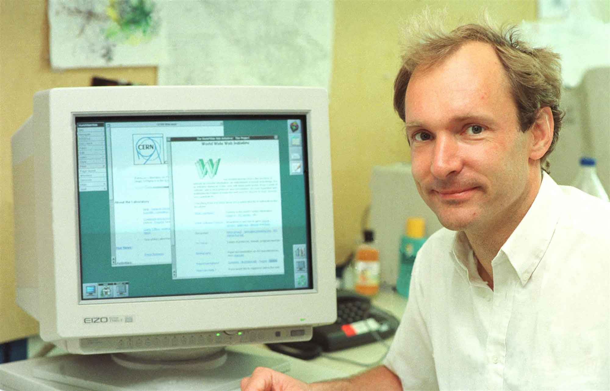

How Has Tim Berners-Lee Changed Modern Society?
Introduction
Sir Tim-Berners-Lee unknowingly change modern society forever in 1989 when he created the World Wide Web. In this essay I will research how the internet turned into a global phenomenon and how the creation of social media has affected the modern society.
How the Internet was Created
A software engineer at CERN, Berners-Lee was constantly surrounded by scientists from all over the world who came to the Switzerland lab however were having difficulty sharing information with one another.
“In those days, there was different information on different computers, but you had to log on to different computers to get at it. Also, sometimes you had to learn a different program on each computer.”-
Florio, M (2019) Investigating in Science, Cambridge: MIT Press.
Berners-Lee had grown up creating electronics for products for products, leading him to eventually becoming a software engineer at one of the worlds best companies. He thought her would be able to solve these scientists’ problems by using a technology called hypertext which was still being developed at this time. This technology would allow the scientists to share their information with each other via their own computers, meaning they no longer had to log onto each other’s computer systems to get the desired information that was saved onto the computer’s hard drive which was very time consuming.(History of the Web, 2019)
By the end of 1990, Berners-Lee created the first webpage browser, “WorldWideWeb.app” with the intention for it to be used by the scientists. The browser quickly grew in popularity and in 1991 Berners-Lee started to consider releasing this browser to the general public, meaning that anyone anywhere in the world with access to a computer would be able to browse the web. This dream turned into reality in April 1993, beginning the global wave of creativity and collaborations that had never been possible before.
Modern Society
Within 27 years, the internet has gone from being a research-based search engine for companies and scientists to relay information to each other, to a world-wide phenomenon that people rely on 24/7 for their every need EG. From using it for research, for example, typing a question into Google and getting thousands of pages of websites brought to you within nanoseconds which provide you with the answers needed; to ordering food; for example, through the online company “Deliveroo” in which you can order food from numerous coffee shops and restaurants and it will be dropped to your door within minutes.
This massive change has brought so many positive outcomes and opportunities for people, such as an increase in job opportunities and creative outlets. For example, those seeking jobs are now able to search online using websites such as “Total Jobs” or “Indeed” which allows you to look for jobs at any time of the day and night. They also allow you to save your CV onto your account, making it even easier to just send off your CV to the companies with one click of a mouse. These websites also send alerts and notifications when another job opening comes up in a field you’re interested in, meaning you’ll never miss a job opportunity again without even having to leave your house. People are also able to start up their own websites and sell their work, ranging from paintings to ceramics to clothing. This allows them to gain global recognition of their work as anyone around the world can find their website and purchase their products.
However, it has also brought many negative outcomes into society, such as deteriorating mental health and an increase in competitively between people.
“1/2 of the people surveyed (aged 14-24) said that Instagram and Facebook exacerbated feelings of anxiety. 7 in 10 said Instagram made them feel worse about their body image; and 2 in 3 said that Facebook made cyber-bullying worse.”-
Clover, A (2017) Social Media + Mental Health: The Good, The Bad + The Balance, Available at: http://www.stronginsideout.com (Accessed: 29th November 2020).
Social Media

Social media became popular amongst young people in the early 2000s. these sites such as Facebook started off as innocent platforms for friends to interact with each other via instant messaging. As the years have gone on, more social media sites have been created, each being more and more public with more and more users. People now are constantly using several forms of social media every day.
In my opinion I think the increased usage of social media has brought many negative impacts onto peoples’ lives, especially young people. Celebrities and influencers get paid to travel the world and wear the most sought-after brands to showcase their supposed perfect lifestyle. However, to have that perfect lifestyle, you have to take the perfect pictures. 79% of images uploaded onto social media are photoshopped. This includes models with photoshopped bodies; creating an unrealistic beauty standard for young people who idolise these celebrities.
"Unreasonable or impossible standards of beauty created by photo retouching can result in individual feelings of being flawed, not measuring up, or not being good enough. Over time, it's possible for an individual to internalize these feelings, which may result in low self-esteem, reduced self-confidence, and feelings of sadness and depression."-
- Flynn, C (2018) How Retouched Photos Impact our Mental Health, Available at: http://www.sheknows.com (Accessed: 29th November 2020).
When young people see their idols with their unachievable bodies, it can make them feel dissatisfied with themselves and that they are not pretty enough, which can result in crash diets, undereating and cosmetic surgery to try and look like these celebrities who do not even look like their photographs in real life.
However, despite the many negative aspects of social media there are also many positives, especially during the coronavirus lockdown. No one in our lifetime has experienced a global pandemic like COVID-19, putting us all on the same pedestal and therefore forming a mass community to support each other. Software such as FaceTime and WhatsApp have allowed families and friends all over the world to be able to communicate and video call each other during these extremely hard times when we are not allowed to see the ones we care for most. I strongly believe that the reason so many people were able to get through these consistent lockdowns is social media.
This can be seen as positive as we are able to communicate with friends and family all over the world, whether it be keeping in contact with your friends who have moved to a new country for university or family who live on the other side of the world and cannot travel home. Group video calls on applications such as Zoom have also played a positive role during lockdown as it has allowed large groups of people to interact in one video call at the same time for long periods of time, helping people to feel less isolated during these difficult times.